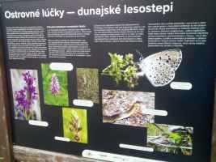

nájdená v kríkoch na začiatku
jazier pri zbere odpadkov
26.12.2019

Po príchode na jazero, zrazu akoby ste sa ocitli v inom svete. Svete plnom vody a prírody.
Jazerá patria nielen medzi najkrajšie ale hlavne naj-prírodnejšie v Bratislave.
Nachádzajú sa v oblasti s názvom Ostrovné lúčky.
Azda najkrajšie o tomto území píše Bratislavské ochranárske združenie (BROZ) :
"Územie európskeho významu Ostrovné lúčky zahŕňa zachované fragmenty pôvodne rozsiahlych lužných lesov popri toku Dunaja, lokalizované na jeho pravom brehu v blízkosti Rusoviec a Čunova.
Hodnota územia tkvie v jeho pestrosti. Na pomerne malom území sa tu striedajú biotopy mäkkého a tvrdého lužného lesa, stojatých vôd a ramien – v ostrom kontraste s veľmi vzácnymi suchomilnými trávnatými spoločenstvami. Takéto suché miesta sú lokalizované na miestach mohutných naplavenín štrku, siahajúcich vysoko nad hladinu podzemnej vody. Sila Dunaja, ktorá v minulosti intenzívne pretvárala toto územie, je tak viditeľná dodnes. Na miestach s najväčšou koncentráciou naplaveného štrku vznikli ťažbou v polovici minulého storočia jazerá známe svojou dokonalou čistotou vody. V ich okolí sa dodnes zachovali zvyšky stepných a lesostepných spoločenstiev s výskytom mnohých vzácnych druhov z čeľade orchideovitých, ako napríklad vstavač vojenský alebo pokrut jesenný.
Hoci prevažná časť územia je dnes lesnícky obhospodarovaná, v niektorých častiach sa ako poslední mohykáni zachovali obrovské jedince topoľov čiernych či bielych. Práve takéto obrovské staré stromy sú nevyhnutné aj pre hniezdenie nášho najväčšieho dravca – orliaka morského, ktorý je korunou ekosystému lužného lesa. Aj po zmene režimu záplav a kolísania podzemnej vody vplyvom výstavby vodného diela Gabčíkovo sa tu teda zachovali cenné vŕbovo-topoľové a dubovo-brestovo-jaseňových lužné lesy, ktoré sú domovom mnohých vzácnych druhov vtáctva, obojživelníkov či cicavcov. Typickým zástupcom, ktorého pobytové znaky v podobe ohryzov na stromoch sú neprehliadnuteľné, je bobor vodný." (zdroj BROZ)
Čunovské jazerá patria do týchto pásiem OCHRANY PRÍRODY:
Okrem zóna B a D sa v chránenom areáli Ostrovné Lúčky nachádzajú aj:
>zóna A (5.stupeň ochrany, rozloha 235,24 ha, bývalá PR Dunajské ostrovy)
>zóna C (3.stupeň ochrany, rozloha 22,07 ha )
Do Chráneného areálu (CHA) Ostrovné Lúčky patria 3 územia európskeho významu (ÚEV):
SKUEV0269 (výmera 627,45 ha)
SKUEV1269 (výmera 12,43 ha)
SKUEV2269 (výmera 15,003 ha)
Čunovské jazerá patria do SKUEV0269.
Výmera územia európskeho významu - SKUEV0269 bola podľa Výnosu MŽP SR v roku 2004 vytýčená na 613,56 ha
a v roku 2011 zmenená na 627,58 ha ako aktualizácia pre Európsku komisiu EK.
Od začiatku ochrany prírody na jazerách (rok 1988) sa menili aj tabuľky upozorňujúce návštevníkov na ich ochranu.
Od socialistickej Prírodnej Rezervácie až po dnešný Chránený Areál:
|
|
|
| táto ČSSR PR tabuľka bola nájdená v kríkoch na začiatku jazier pri zbere odpadkov 26.12.2019 |
táto platila do 1.3.2021 |
|
|
|
| tabuľka dnes |

|
zabudnutá tabuľka PR Ostrovné lúčky aj so smerom turistickej cesty, farba sa už vytráca |

|
Na jazerách sú osadné aj nové informačné tabule. Osadilo ich ochranárske združenie BROZ a štátna ochrana prírody. Jedna tabula sa nachádza na začiatku jazier, tá druhá je pri malom jazere. Dozviete sa v nich veľa zaujímavých vecí o jazerách a ich okolí:

|

|
"Ostrovné lúčky
Chránený areál Ostrovne lúčky bol vyhlásený v roku 2021 s výmerou 674 ha Lokalita je súčasťou Chránenej krajinnej oblasti Dunajské luhy Chráneného vtačieho územia Dunajské luhy ako aj mokrade medzinárodného významu (tzv. Ramsarská lokalita) Chránený areál je územím európskeho významu v rámci európskej sústavy chránených území NATURA 2000 a zahŕňa aj územie bývalých prírodných rezervácii Ostrovne lúčky a Dunajské ostrovy
Hodnota tohto územia tkvie v jeho pestrosti. Na pomerne malom území sa tu strieda pestrá škála prírodných prostredí mäkký a tvrdý lužný les, stojaté vody, staré riečne ramená a vzácne dunajské lesostepi s výskytom orchidei (Orchidaceae). Na časti lesostepi, kde naplavený štrk siahal až na povrch, vznikli ťažbou jazerá známe svojou dokonalou čistotou vody. Vďaka priesakom vody z Dunaja cez naplavené štrkopiesky sa tu nachádza jeden z najväčších a najvýdatnejších zdrojov kvalitnej pitnej vody na Slovensku
Hranice chráneného areálu Ostrovné lúčky - územie je členené na najprísnejšiu zónu A (5 stupeň ochrany), kde neprebieha obhospodarovanie, zónu B (4 stupeň ochrany, s veľmi obmedzeným hospodárením) a zóny C (3 stupeň ochrany) a D (2 stupeň ochrany), kde obhospodarovanie prebieha v režime, aby zostali zachované prírodné hodnoty územia, v zóne D sa môžete pohybovať voľne, v zónach A, B. C môžete využiť vyznačené turistické chodníky, vjazd a státie s motorovým vozidlom sú v celom chránenom území zakázané (zdroj Štátna ochrana prírody Slovenskej republiky)
pokrut jesenný (Spiranthes spiralis) je orchideou ktorá patrí y súčasnosti k najohrozenejším rastlinám Európy kvitne najmä na chudobných lúkach, pasienkoch či v riedkych krovinách a v presvetlených lesoch
lužné lesy a priľahlé vodné biotopy predstavujú hodnotne prírodné prostredie vyznačujú sa druhovým bohatstvom rastlín aj živočíchov a vďaka svojej schopnosti viazať veľké množstvo uhlíka z atmosféry ochladzovať a zvlhčovať Okolie zohrávajú kľúčovú úlohu v zmierňovaní zmeny klímy
(toto P Fodor)
pred zregulovaním Dunaja, jeho ramená voľne meandrovali, štrky a piesky, ktoré so sebou Dunaj prinášali boli schopné zachytávať veľké množstvo podzemnej vody, územie sa tak stalo obrovskou a cennou zásobárňou pitnej vody (foto: M Rakovská)
zaplavované lesy, močiare a podmáčané lúky v okolí riek sú veľmi efektívnymi sťahovačmi uhlíka z atmosféry, na rozhraní súše a vody tu mnohé druhy využívajú potenciál oboch prostredí, mokrade tak predstavujú skutočné oázy života (foto: B. Molnár)
volavka biela (Ardea alba) je druhom pestrej palety vodného vtáctva dunajskej krajiny (foto J Mrocek)
mlok bodkovaný (Lissotriton vulgaris) je vzácnym obyvateľom dunajskej lužnej krajiny (foto: P Drengubiak)

|

|
|
|  |

|
"Tento informačný panel vznikol vďaka finančnej podpore Európskej únie, za jeho obsah zodpovedá BROZ a nemusí nevyhnutne odrážať názory Európskej únie"
"Ostrovné lúčky - dunajské lesostepi
Typickou črtou Ostrovných lúčok sú posledné zachované zvyšky kedysi rozsiahlejších dunajských lesostepí. Ich vznik bol podmienený činnosťou Dunaja, ktorý sa v minulosti neustále menil a premiestňoval svoje koryto. V pozostatkoch jeho ramien a bývalých korýt sa hromadil štrkopieskové náplavy. Miesta, kde nánosy štrku vystupujú vysoko na povrch, sú oveľa suchšie ako ich okolie, pretože sa tu vyvinuli len veľmi plytké pôdy a väčšina zrážok odtečie štrkovou vrstvou. Napriek veľkým zásobám podzemnej vody v podloží voda cez hrubozrnné štrky nedokáže vzlínať a vegetácia na povrchu trpí suchom. Vďaka tomu dnes uprostred dunajských lužných lesov nájdeme aj suché krovinno-bylinné spoločenstvá, tzv. dunajské hložiny. Tento typ biotopu je dnes už veľmi vzácny, pretože veľká časť dunajských hložín zanikla v dôsledku ťažby štrku a výstavby. Okrem toho, po regulácii koryta Dunaja tu už nové štrkové náplavy nevznikajú.
Prírodné bohatstvo dunajských hložín
V zachovaných dunajských hložinách dnes nájdeme viacero vzácnych druhov európskeho významu. Tieto miesta dnes predstavujú významné botanické lokality a refúgiá mnohých chránených a ohrozených druhov rastlín.
Ostrovné lúčky sú bohaté na výskyt orchideí vstavač vojenský (Orchis militaris). červenohlav obyčajný (Anacamptis morio), neotinea počerná (Neotinea ustulata) červenohlav ploštičný (Anacamptis coriophora). Mimoriadne významný je výskyt malej nenápadnej na jeseň kvitnúcej orchidei - pokrutu jesenného (Spiranthes spiralis). Tento kriticky ohrozený druh má ťažisko svojho rozšírenia na Slovensku práve na lesostepiach medzi Rusovcami a Čunovom.
Z krovín sú tu zastúpené najmä hloh jednosemenný (Crataegus monogyna), vtáčí zob (Ligustrum vulgare), svíb krvavý (Swida sanguinea), dráč obyčajný (Berberis vulgaris), ruža šípová (Rosa canina). Výskyt stromov je iba ojedinelý, viazaný na hlbšie pôdy. A tie čo tu rastú, sú nízke, zakrpatené, ťažko znášajú extrémne suché prostredie. Najčastejšie býva zastúpený dub letný (Quercus robur). topoľ čierny (Populus nigra) a topoľ biely (Populus alba).
Samozrejme toto suchšie prostredie v porovnaní s okolitým lužným lesom a mokraďami preferuje aj rad rôznych živočíchov. Počas prechádzky tu môžeme stretnúť užovku stromovú (Zamenis longissimus) - nášho najdlhšieho hada alebo užovku hladkú (Coronella austriaca). Najväčšie druhové bohatstvo zaznamenávame u hmyzu - čo je dôsledok teplého, suchého a slnečného prostredia s pestrou kombináciou rôznych druhov rastlín. Typickými sú tu napr. modlivka zelená (Mantis religiosa), rôzne druhy motýľov, blanokrídlovcov, koníkov a kobyliek.
obr:
červenohlav obyčajný (Anacamptis morio) na Ostrovných lúčkach (foto: M. Kúdela)
motýle sú symbolom biodiverzity dunajských lesostepi (foto: Viliam Ridzoň)
užovka stromová (Zamenis longissimus) je najdlhším hadom žijúcim u nás (foto: Andrej Alena)
Jašterica zelená (Lacerto viridis) uprednostňuje prostredia lesostepného charakteru (foto: J. Melicher)
latinský názov vstavača vojenského (Orchis militaris) je odvodený z tvaru jeho troch okvetných lístkov, ktoré spolu vytvárajú vajcovitú prilbu (foto: R. Kúdela)
pokrut jesenný (Spiranthes spiralis) kvitne od druhej polovice augusta do polovice októbra (foto: A. Devečka)
červenohlav ploštičný (Anacamptis coriophora)
"Ostrovné lúčky - lužné lesy
Chránený areál Ostrovné lúčky reprezentuje pozostatok pôvodnej lužnej krajiny, ktorá kedysi tvorila veľkú časť Podunajskej nížiny. Toto územie bolo formované najmä náplavovou a eróznou činnosťou Dunaja, ktorý tu vytváral spleť riečnych ramien, mokradi a lužných lesov
mäkký lužný les v okolí riečnych ramien je spätý s pravidelnými záplavami (foto: M. Kúdela)
Pôvodný charakter dunajskej krajiny bol značne pozmenený predovšetkým výrubom prirodzených lesov a vysádzaním plantáži nepôvodných hybridných topoľov kanadských, odvodňovaním krajiny a reguláciou koryta Dunaja. Prirodzené lužné lesy sa zachovali len na zlomku ich pôvodnej rozlohy, a preto sú v súčasnosti predmetom ochrany
leknu bielemu (Nymphoed alba) patria tieto efektné veľké kvety plávajúce na hladine stojatých alebo mierne tečúcich vôd (M Vicianová)
Prírodné bohatstvo
Chránený areál Ostrovne lúčky tvorí mozaika lužných lesov lesostepí a riečnych ramien, ktoré poskytujú vhodné prostredie pre život mnohým vzácnym druhom rastlín a živočíchov európskeho a národného významu. Dominujú tu vŕbovo-topoľové a dubovo-brestovo-jaseňové lužné lesy. ako aj suchomilné porasty s významným výskytom druhov orchideí z čeľade vstavačovitých (Orchidaceae) a prirodzené stojaté vody s vegetáciou plávajúcich alebo ponorených rastlín
cesnak medvedí (Altum ursinum) je typickou bylinou farebných kobercov jarných druhov - Ich kvety sa začínajú rozvíjať skôr ako stromy zatienia listami podrast lužného lesa (foto A Devečka)
Lužné lesy sa delia na mäkké a tvrdé
Na miestach, ktoré rieka vytvorila naplavením materiálu len nedávno, rastie mäkký lužný les Obvykle je tu vysoká podzemná voda a pravidelné záplavy z drevín tu prevláda vŕba biela (Salix alba), vŕba krehká (Salix fragilis), topoľ biely (Populus alba) a topoľ čierny (Populus nigra). miestami sa vyskytuje jelša sivá (Alnus incana), brest väz (Ulmus laevis) a na trvalejšie zamokrených stanovištiach a v rašeliniskách jelša lepkavá (Alnus glutinosa) Na vyššie položené plochy s lepšie vyvinutou pôdou sa viažu spoločenstvá tvrdého lužného lesa s druhmi ako jaseň úzkolistý (Fraxinus angustifolia), dub letný (Quercus robur), brest hrabolistý (Ulmus minor). brest väz (Ulmus laevis). jaseň štíhly (Fraxinus excelsior), Javor mliečny (Acer platanoides) a javor poľný (Acer campestre)
mŕtve drevo zohráva v lužnom lese dôležitú úlohu - ovplyvňuje mikroklímu. Vo svojej hmote viaže veľké množstvo uhlíka a poskytuje úkryt a potravu pre množstvo druhov rastlín hub hmyzu a vtáctva (foto. T Kušík)
Vodný zdroj Rusovce - Ostrovné lúčky - Mokraď
Štrkopieskové náplavy Dunaja na tomto území vytvorili rozsiahlu nadrž podzemných vôd. Nachádza sa tu je. deň z najväčších a najvýdatnejších vodných zdrojov na Slovensku s celkovou kapacitou 2650 litrov za sekundu Priľahlé štrkoviská vyznačujúce sa dokonalou čistotou vody, vznikli ťažbou na miestach, kde naplavený štrk siahal až takmer na povrch a bol prekrytý nanajvýš tenkou vrstvou pôdy
lužné lesy pozdĺž Dunaja obýva náš najväčší dravec orliak morsky (Haliaeetus albicilla) len staré a pevne stromy sú schopné udržať ťarchu jeho až pól tony vážiaceho hniezda (foto: P Fodor)
Ochrana prírody a zmena klímy
Pravidelne zaplavované lužné lesy a okolité mokrade predstavujú cenne územia aj z hľadiska zmierňovania zmeny klímy, pretože dokážu zachytávať a ukladať veľké množstvá skleníkového plynu CO, zodpovedného za otepľovanie planéty. Sú tiež schopné zadržať obrovské množstvo vody pri prívalových dažďoch a v lete ju postupne uvoľňovať a ochladzovať tak okolitú klímu.
rosnička zelená(Hyla arborea) sa rozmnožuje v mokradiach, ale neskôr žije na súši a bežne ju nájdeme aj na stromoch (foto: P. Fedor)
bobor európsky (Castor fiber)obľubuje kombináciu stojatých a tečúcich vôd s výskytom tzv. mäkkých drevín na brehu - vŕb a topoľov (foto: R. Jureček)"
Ešte nedávno pri Čunovských jazerách boli umiestnené staršie informačné tabule.
"Prírodná rezervácia Ostrovné lúčky bola vyhlásená v roku 1988 s výmerou 54.83 ha na ochranu lesostepných spoločenstiev s výskytom vzácnych teplomilných rastlín a živočíchov a na ochranu lužného lesa. Je súčasťou CHKO Dunajské luhy, podľa NATURA 2000 aj územia európskeho významu Ostrovné lúčky, chráneného vtáčieho územia Dunajské luhy a medzinárodnej Ramsarskej lokality Dunajské luhy. Podľa zákona 543/2002Z z, v nej platí IV. stupeň ochrany.
Z dôvodov silnej degradácie lokality najmä vplyvom nerešpektovania obmedzení vyplývajúcich z tohto zákona vás prosíme o dodržiavanie zákazu vjazdu a státia s motorovým vozidlom, pešieho pohybu mimo vyznačeného turistického chodníka (pozri mapu), voľne pustiť psa, kúpať sa vo veľkom jazere, jazdiť na koni a bicykli, rúbať' dreviny, zakladať' oheň, táboriť, odchytávať a usmrcovať živočíchy a zbierať rastliny vrátane ich plodov. Dodržiavaním týchto obmedzení prispejete k zachovaniu tejto prírodnej rezervácie a predídete sankcionovaniu podľa zákona.
Ďakujeme za porozumenie"
Spoločenstvá dunajských hložín
Typickou črtou Ostrovných lúčok sú tzv. dunajské lesostepi. Počas dlhodobého vývoja sa koryto Dunaja postupne premiestňovalo a prehlbovalo. V bývalých korytách a ramenách po ňom ako pamiatka ostávali štrkové a štrkopieskové náplavy. Tieto boli neskôr ďalšou činnosťou Dunaja prerušované a vznikli štrkové ostrovy. Na miestach, kde štrkové nánosy vystupujú vysoko na povrch sa vyvinuli iba veľmi plytké pôdy, čo umožnilo vznik suchých krovinno-bylinných spoločenstiev, tzv. dunajských hložín (Asparago-Crataegetum). Napriek veľkým zásobám podzemnej vody v podloží, voda cez hrubozrnné štrky nedokáže vzlínať a vegetácia na povrchu trpí suchom.
Ostrovné lúčky patria medzi posledné zachované zvyšky kedysi rozsiahlych spoločenstiev dunajských lesostepí. Veľká časť z nich bola zlikvidovaná ťažbou štrku, tak vznikli aj Čunovské jazerá alebo aj známe štrkoviská v Petržalke (Draždiak).
Prechod lužného lesa do krovinného spoločenstva je zvyčajne dosť náhly a pôsobí veľmi kontrastne. Niekedy je prechod postupný, prejavuje sa rednutím lesa a pribúdaním krovín. Vytvorí sa prechodná zóna, vytvorená hustým, nepreniknuteľným zárastom krov. Z krovín sú tu zastúpené najmä hloh jednosemenný, zob vtáčí, svíb krvavý, dráč obyčajný, ruža šípová. Výskyt stromov je iba ojedinelý, viazaný na hlbšie pôdy. Stromy sú však nízke, zakrpatené, ťažko znášajú extrémne, suché prostredie. Najčastejšie býva zastúpený dub letný, miestami aj topoľ' čierny či topoľ' biely. Zaujímavý je aj výskyt ceru a duba plstnatého.
Keďže dunajské lesostepi vznikali ako mohutné náplavy štrku, ktoré boli také vysoké, že po svojom vzniku už neboli významne ovplyvnené záplavami a vysokou hladinou podzemnej vody a také suché, že tu nedošlo k vytvoreniu vrchných vrstiev pôdy, miestami sa nachádzajú na malej ploche ostré prechody z mokradí do mäkkého lužného lesa a vzápätí priamo do lesostepi.
Spoločenstvá dunajských hložín sú bohaté na výskyt orchideí: vstavač vojenský, vstavač obyčajný, vstavač počerný, vstavač ploštičný. Mimoriadne významný je výskyt nenápadnej, na jeseň kvitnúcej orchidey pokrutu jesenného. Tento kriticky ohrozený druh má ťažisko svojho rozšírenia na Slovensku práve na lesostepiach medzi rastie u nás už len na niekoľkých Rusovcami a Čunovom. Inak nepočetných lokalitách na východnom Slovensku. Dôsledkom zániku lokalít a tradičného obhospodarovania pasienkov mu v strednej Európe hrozí vyhynutie.
Okrem orchidei tu rastie i množstvo ďalších vzácnych a ohrozených druhov: hadivka obyčajná, palina pontická, žltavka prerastená, vranček švajčiarsky, mliečnik Seguierov, paladenec prímorský.
obr:
Chrastavec roľný (Knautia arvensis)
ľan rakúsky (Linum austriacum). Rastie na slnečných trávnatých biotopoch - v oblasti dunajských lužných lesov pôvodne len na lesostepiach.
k pozitývnym prejavom vysokej diversity na lesostepných stanovištiach patria motýle.
V bylinnom poschodí sú zastúpené tiež napr. asparagus lekársky, myší chvost panónsky, ranostajovec pestrý, mliečnik chvojkový, skorocel kopijovitý, kotúč poľný, l'ubovník bodkovaný, šalvia lúčna, šalvia hájna, l'an rakúsky, chrastavec roľný, krvavec menší, zemežlč menšia, l'adenec rožkatý, nevädzovec lúčny, jahoda obyčajná, lipkavec pravý, štrkáč menší, kavyľ vláskovitý, materina dúška.
Samozrejme toto odlišné prostredie preferujú iné živočíchy, než okolitý lužný les. Z hadov tu pomerne často môžeme stretnúť nášho najväčšieho zástupcu - až takmer 2 m dlhú užovku stromovú. Vzácnejšia je podstatne menšia užovka hladká. Najväčšie druhové bohatstvo však nachádzame u hmyzu - čo je dôsledkom teplého, suchého a slnečného prostredia, na ktorom rastie veľké množstvo rôznych druhov rastlín. Typické sú napríklad modlivky zelené, početné druhy motýľov, blanokrídlovcov, koníkov a kobyliek.
Vodárenský zdroj Rusovce - Ostrovné lúčky - Mokraď
Vodárenský zdroj Rusovce - Ostrovné lúčky - Mokraď predstavuje jeden z najväčších a najvýdatnejších zdrojov pitnej vody na Slovensku, V súčasnosti má najväčšiu kapacitu možného odberu vody v rámci celého Slovenska. Bol vybudovaný postupne v priebehu rokov 1976 - 1990, vlastní a spravuje ho Bratislavská vodárenská spoločnosť.
Štrkopiesčité náplavy Dunaja tu vytvárajú rozsiahlu nádrž podzemných vôd prevažne s voľnou hladinou a z hydrogeologického i vodohospodárskeho hľadiska predstavujú významnú zásobáreň podzemnej vody. Celková hrúbka štrkopiesčitého súvrstvia, v ktorom sú umiestnené studne, dosahuje 60-80 m.
Na základe výsledkov hydrogeologického prieskumu bola zdokumentovaná celková kapacita vodárenského zdroja Rusovce - Ostrovné lúčky - Mokraď je 2580 litrov za sekundu. Pri súčasnej technickej vybavenosti vodárenského zdroja je možné z 23 studní odoberať 1670 litrov za sekundu.
Dominantným zdrojom dopĺňania prírodných zásob podzemných vôd akumulovaných v štvrtohorných riečnych náplavoch je rieka Duna Vzájomný vzťah povrchovej a podzemnej vody je podstatný faktorom, ktorý rozhoduje o množstve a kvalite vody vo vodárenskom zdroji.
Medzi činitele, ktoré môžu negatívne ovplyvňovať kvalitu podzemnej vody a ohrozovať vodárenský zdroj, patrí expanzia bytovej výstavby do priestoru hydraulického dosahu studní vodárenského zdroja, plošné rozšírenie a intenzifikácia poľnohospodárskej a živočíšnej výroby, nekontrolovateľná rekreačná, turistická činnosť s veľkou a dlhodobou koncentráciou návštevníkov.
na obr. Vstavač ploštičný (Orchis coriophora)."

|

|

|

|

|

|
Informačné panely boli zhotovené v rámci projektu "Ochrana a manažment dunajských lužných lesov", ktorý
podporila Európska komisia v rámci programu LIFE - Príroda. Cieľom projektu je ochrana posledných
zvyškov prirodzených lužných lesov v slovenskej časti dunajských luhov. Projekt realizuje Bratislavské
regionálne ochranárske združenie (BROZ) spolu s partnermi - Štátna ochrana prírody SR a Národný park Donau-Auen v Rakúsku.
Aktivitami projektu sú zastavenie výrubu najcennejších lesov, zavedenie jemnejších spôsobov lesného hospodárenia, vyhlasovanie
nových prírodných rezervácii, vydanie propagačných materiálov, výkup a dlhodobý prenájom území lužných lesov za účelom ochrany prírody a i. Viac
informácii nájdete na www.broz.sk. Za podporu ďakujeme aj Bratislavskej vodárenskej spoločnosti (BVS).
Ostrovné lúčky
Podunajská rovina bola oddávna formovaná eróznou a náplavovou činnosťou Dunaja. Dunaj v minulosti často menil svoje koryto, rozvodňoval sa, zostávali po ňom v teréne dobre viditeľné zníženiny (pozostatky pôvodných ramien) a štrkové i pieskové naplaveniny. Alúvium Dunaja pokrývali rozsiahle lužné lesy, popretkávané dunajskými ramenami s bohatou mokraďnou vegetáciou, čo krajine dodávalo charakteristický ráz. Vplyvom rôznych zásahov človeka (odlesňovanie, odvodňovanie, regulácia koryta Dunaja, výstavba vodného diela Gabčíkovo a i.), sa vzhľad krajiny úplne zmenil. Väčšina lužných lesov bola vyrúbaná, alebo premenená na hospodárske, zväčša monokultúrne lesy, kde sa často pestujú nepôvodné, rýchlorastúce dreviny, V súčasnosti na Podunajskej nížine prevláda poľnohospodárska krajina, čo je podmienené kvalitnou a úrodnou pôdou na bohatých riečnych náplavoch. Lužné lesy s pôvodným druhovým zložením sa dodnes zachovali iba na zlomku ich pôvodnej rozlohy. Pre ich záchranu bolo vyhlásených niekoľko chránených území.
Prírodná rezervácia (PR) Ostrovné lúčky a jej bezprostredné okolie predstavuje pozostatok pôvodnej lužnej vegetácie, ktorá v minulosti pokrývala rozsiahle plochy Podunajskej roviny. Rezervácia bola vyhlásená v roku 1998 na ochranu zriedkavej flóry, zachovalých lesostepných spoločenstiev a lužného lesa Podunajskej nížiny. Na relatívne malej ploche sú tu zachované všetky typické lužné ekosystémy - vodné plochy, mokrade, lesy aj suché lesostepi.
Charakter vegetácie lužného lesa sa mení v závislosti od vodného režimu a substrátu. Pre miesta s vysokou hladinou podzemnej vody a periodickými záplavami je charakteristická vegetácia mäkkého lužného lesa. V porastoch prevláda z drevín najmä vŕba biela, vŕba krehká, topor biely a topor čierny, miestami sa vyskytuje jelša sivá a brest väz a na vlhkých miestach s menšími výkyvmi vodnej hladiny a v slatinných rašeliniskách jelša lepkavá. Poschodie krovín je chudobné na druhy, rastie tu najmä svíb krvavý a baza čierna, niekedy majú krovitý charakter aj vrbiny. V podraste prevládajú z tráv chrastnica trsťovníkovitá, lipnica pospolitá, z bylín žihľava dvojdomá a ostružina ožinová, netýkavka nedotklivá a mnoho ďalších.
Na vyššie položené plochy na aluviálnych naplaveninách a riečnych terasách alebo na staršie plochy s lepšie vyvinutou pôdou sa viažu spoločenstvá tvrdého lužného lesa s prevahou tvrdých lužných drevín: jaseň úzkolistý, dub letný. brest hrabolistý, brest väz, jaseň štíhli, čremcha strapcovitá, javor mliečny a javor poľný, ale miestami aj topole. Tvrdý lužný les sa vyskytuje tak na plochách pravidelne zaplavovaných, ale aj na suchších miestach, kam záplavy prejavujú iba ako zvýšená hladina podzemnej vody.
Krovinné poschodie býva dobre vyvinuté a bohaté na druhy - obvykle ho tvoria svíb krvavý, zob vtáčí, bršlen európsky, hloh jednosemenný a lieska obyčajná. Takisto bylinný podrast je podstatne bohatší a druhovo pestrejší ako pri mäkkom luhu. Typické sú farebné koberce jarných druhov - snežienka jarná, scila dvojlistá, cesnak medvedí a pod., ktoré sa rozvinú skôr ako stromy zatienia listami podrast lužného lesa. Po nich nastupujú druhy, ktoré dobre znášajú zatienenie - kozonoha hostcová, můrovnik lekársky, ostružina ožinová, žihľava dvojdomá, brečtan popínavý, lipkavec obyčajný.
Vplyvom lesného hospodárenia a neuváženej parkovej výsadby sa do lesných porastov dostali aj nepôvodné dreviny -severoamerické druhy (jaseň červený, jaseň americký, agát biely, orech čierny, javorovec jaseňolistý) a východoázijský pajaseň žliazkatý. Tieto dreviny sa miestami invázne šíria a nahrádzajú pôvodné lužné lesy, najmä na miestach narušených rôznymi zásahmi človeka. Na najsuchších lesostepných miestach bola vysádzaná mediteránna borovica čierna, resp. borovica obyčajná (prirodzene sa nevyskytujúca v tomto území). Tieto výsadby likvidujú pôvodné lesostepné spoločenstvá, vytláčajú pôvodné početné druhy špecializovaných rastlín a živočíchov a radikálne menia vlastnosti pôdy. Osobitým problémom sú umelo vyšľachtené topole euroamerické (kanadské), ktoré sa pestujú pre drevo a celulózu formou plantáži. Spontánne sa síce nešíria, avšak pestujú sa na rozsiahlych plochách a ich porasty umožňujú prežívať iba niektorým druhom z pôvodných spoločenstiev lužného lesa.
Na území Ostrovných lúčok sú v prevažnej miere zastúpené tvrdé lužné lesy, na malých plochách lesostep vo fragmentoch sa popri vodných plochách zachovali i spoločenstvá mäkkého luhu. V území sa vyskytuje i niekoľko vodných plôch s bohatou mokraďnou vegetáciou. Pozoruhodný je hromadný výskyt chránenej rezavky aloovitej.
obr:
V mŕtvych ramenách je početná svojrázna plávajúca rastlina - rezavka aloovitá (Stratiotes aloides).
Mäkký lužný les, dunajské rameno alebo močiar? V dynamickom dunajskom prostredí je to niekedy ťažko povedať... V popredí kvitnúce kosatce žlté (Iris pseudacorus).
Čunovské rameno po (dočasnom) vyschnutí. Pravidelné vysychanie a zaplavovanie plytkých ramien je nevyhnutné pre mnohé organizmy (napr. obojživelníky), ktoré by v trvalej vodnej nádrži boli vytlačené konkurenciou.
V pozadí: mŕtve dunajské rameno zarastené plávajúcimi rezavkami aloovitými (Stratiotes aloides)
Pokrut jesenný (Spiranthes spiralis) je jedna z najohrozenejších orchidei na Slovensku.
Vstavač obyčajný (Orchis morio) bol v minulosti pomerne hojný, avšak postupne veľmi silno ustúpil. Aj na dunajských lesostepiach rastie už iba miestami.
Fuzáč vŕbový (Lamia textor)